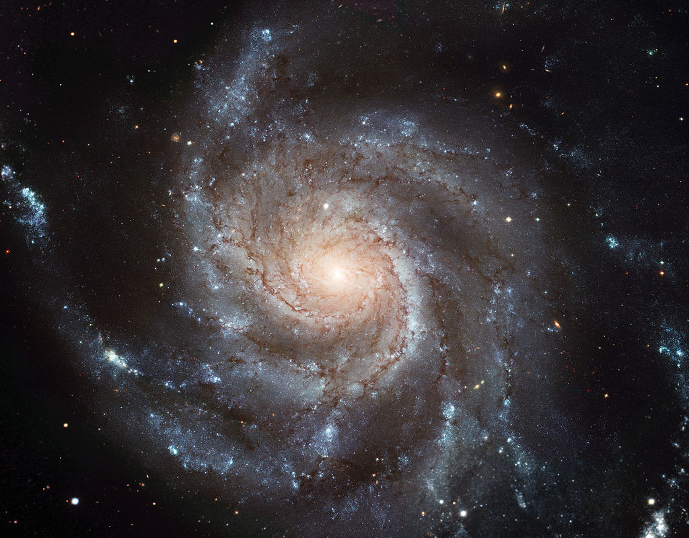

Spiral Galaxy
Spiral galaxies are easily identified by observing three components common to all spiral galaxies. A spiral galaxy
has a disk, a bulge, and a halo. The center of the galaxy is like a nucleus, containing a sphere shaped bulge that
houses old stars and is devoid of dust and gas. The circular shape of the galaxy composes the disk. The arms of the
spiral galaxy originate in the disk and are where new stars will form in a galaxy.
The sun in our galaxy is located in one arm and its stars are created in this portion of the galaxy, which contains the
most gas in the galaxy. This area is rich in blue stars. The Halo is a spherical shaped collection of old stars and
clusters known as globular clusters that is found in the outer edge of the galaxy. This stunning view of Spiral Galaxy
Messier 74 from NASA taken with the Hubble telescope shows a bright bulge in the center with the arms spiraling outward.
When a spiral galaxy has no arms, S0, it is termed lenticular. These galaxies are so similar to E7 that identifying them
can be tricky. Lenticular galaxies also occur with barred spiral and are classified as SB0. Spiral galaxies are the most
common galaxy of the known universe, comprising about 77% of all known galaxies.
Andromeda Galaxy

Milky Way Galaxy

Sunflower Galaxy
Triangulum Galaxy
Pinwheel Galaxy
Whirpool Galaxy